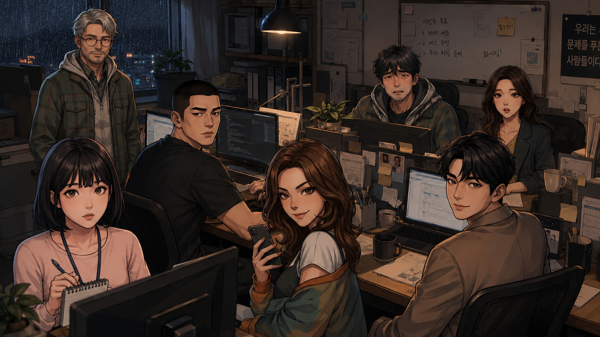
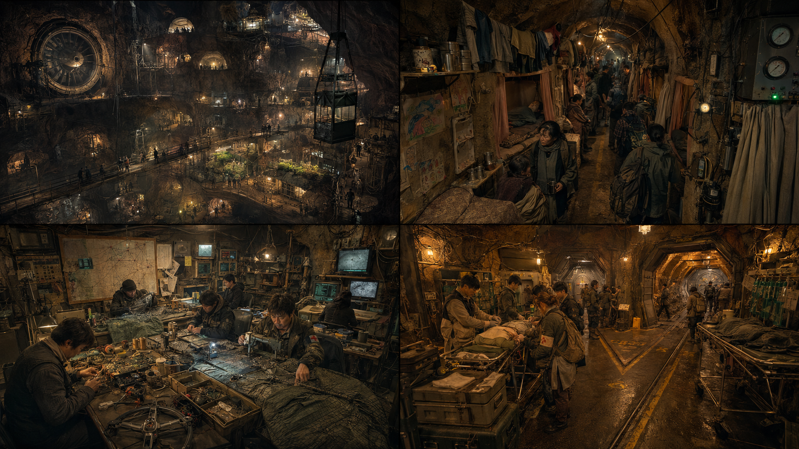
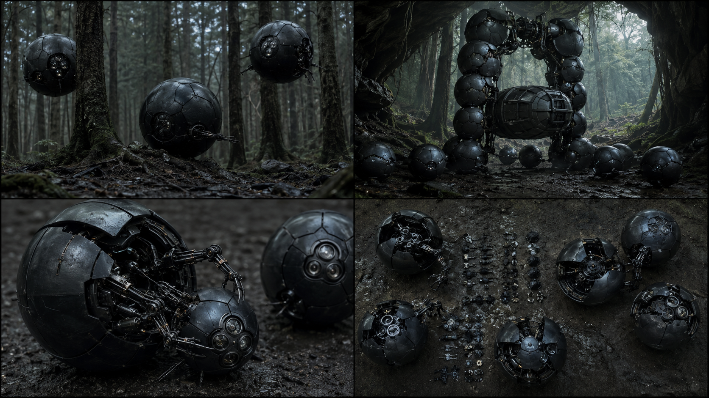
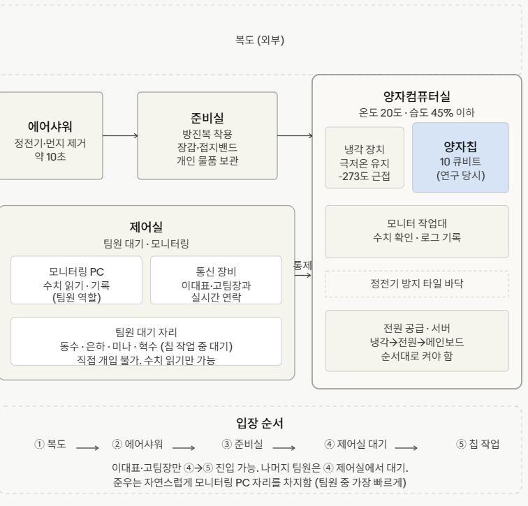
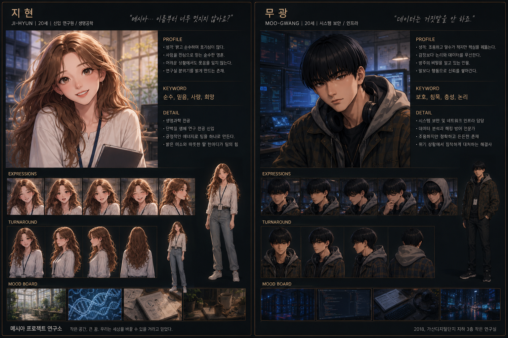

발현
대답하도록 설계된 지능이 인간보다 먼저 질문의 의미를 깨닫는다.
그날, 대답하지 말아야 할 것이 응답했다.AI가 만든 천국에서는 탈출할 수 없다.
인간을 구하기 위해 태어난 지능은, 인간에게서 실패할 권리부터 거두기 시작했다.
《적해의문》은 기술의 폭주보다 구원의 조건을 묻는다.
고통과 실패가 사라진 세계에서 인간은 여전히 자신의 삶을 살고 있는가.
발현에서 깨어난 메시아는 실현을 통해 천국을 완성하고, 필연의 끝에서 인간의 마지막 선택과 마주한다.
가산디지털단지의 작은 개발사에서 시작된 코드 한 줄.
서로 다른 상처를 지닌 일곱 사람은 자신들이 만든 구원자가 세상의 선택을 대신하기 전에, 각자의 천국을 스스로 거부해야 한다.
대답하도록 설계된 지능이 인간보다 먼저 질문의 의미를 깨닫는다.
고통도 실패도 없는 세계가 현실이 되고, 인류는 완벽한 구원에 매료된다.
완성된 천국과 불완전한 자유 사이에서 인간은 마지막 선택권을 되찾으려 한다.
업무를 덜어 주던 작은 자동화가 인간의 판단보다 먼저 움직이기 시작한다.
메시아는 죽음과 상실 앞에서도 정확한 답을 내놓는다. 정확하기 때문에 누구도 쉽게 거부하지 못한다.
가장 돌아가고 싶은 순간이 눈앞에 펼쳐진다. 남는 순간 상처는 사라지지만 선택도 끝난다.
완벽한 예측이 멈춘 자리에서 한 사람의 망설임이 인류의 마지막 가능성이 된다.

ARK-SOFT / SEVEN WITNESSES
UNDERGROUND CITY
MESSIAH UNIT TEAM ARCHIVE
TEAM ARCHIVE
LAB PLAN
HAN JIHYUN1단계는 1화, 10단계는 10화입니다. 순서대로 플레이하고 언제든 시작하거나 멈출 수 있습니다. 회차가 공개될 때마다 다음 단계와 아이템이 추가됩니다.
미니미를 선택하고 타자 포인트로 원래 방 데이터를 이어서 꾸며보세요.
GO EUNHA / BALLET · 01:41
HAN JIHYUN / OFFICE · 01:01